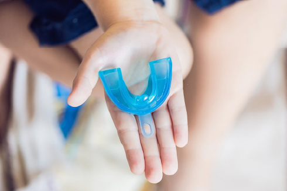
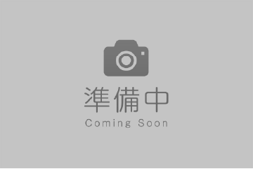
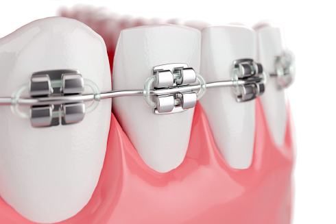
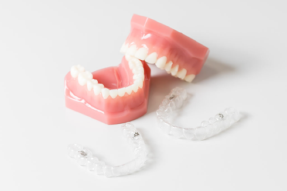

FEATURES
当院の矯正治療の特徴
審美性と機能性の
どちらも重視
見た目の美しさはもちろん、「長期的にしっかり噛める」機能性も重視しています。そのため、お顔や全身の骨格まで考慮した矯正治療が当院の特徴です。
ご希望を叶える
豊富な治療メニュー
「目立ちにくい矯正装置にしたい」「なるべく費用を抑えたい」など、お一人お一人のご希望に合った治療を受けていただけるよう、豊富な治療メニューをご用意しています。
先進の設備を完備
患者さまに的確で負担の少ない矯正治療を受けていただけるように、「iTero(アイテロ)」と呼ばれる高性能3Dスキャナーをはじめ、先進の設備を導入しています。
お悩みの症状はございませんか？
上顎前突(出っ歯)
上の前歯が前方に突出している状態で、日本人に多くみられる歯列不正の一つです。遺伝的な要素や指しゃぶり・口呼吸などの悪いクセが原因となります。
口が閉じづらく、お口が乾燥してむし歯や歯周病のリスクが高くなります。
口が閉じづらく、お口が乾燥してむし歯や歯周病のリスクが高くなります。

下顎前突(受け口)
上の前歯よりも下の前歯が前に出ている状態です。遺伝的な要因が大きいですが、指しゃぶりや頬杖によって悪化することもあります。
下顎が突出して見えるためコンプレックスになりやすく、顎関節にも大きな負担がかかります。
下顎が突出して見えるためコンプレックスになりやすく、顎関節にも大きな負担がかかります。
叢生(乱ぐい歯)
歯の生える向きがバラバラで、歯並びが乱れた状態です。八重歯も叢生の一種です。歯が大きすぎたり顎が小さすぎたりして、歯の並ぶスペースが足りないことが主な原因です。
歯磨きが難しく、むし歯や歯周病にかかりやすくなります。
歯磨きが難しく、むし歯や歯周病にかかりやすくなります。
過蓋咬合
上の前歯で下の前歯が隠れてしまうほどかみ合わせが深い状態です。
下の前歯が上顎の歯ぐきを傷つけたり、奥歯がすり減ったりすることがあります。また顎関節症も誘発しやすくなります。
下の前歯が上顎の歯ぐきを傷つけたり、奥歯がすり減ったりすることがあります。また顎関節症も誘発しやすくなります。
空隙歯列(すきっ歯)
歯と歯の間にすき間がある状態です。
歯が小さい、顎が大きい、歯が足りないなどの原因があります。
すき間に汚れが溜まりやすく、むし歯や歯周病になったり、「サ行」の発音が不明瞭になるなどの問題があります。
歯が小さい、顎が大きい、歯が足りないなどの原因があります。
すき間に汚れが溜まりやすく、むし歯や歯周病になったり、「サ行」の発音が不明瞭になるなどの問題があります。
正中離開(すきっ歯)
上の2本の前歯の間にすき間のある状態です。
原因や問題は「空隙歯列」と同じですが、すき間が一部なので部分矯正や審美治療で治せる場合もあります。
原因や問題は「空隙歯列」と同じですが、すき間が一部なので部分矯正や審美治療で治せる場合もあります。
PEDIATRIC ORTHODONTICS
小児矯正
当院の小児矯正治療

歯列矯正用咬合誘導装置(プレオルソ)の特徴
-
痛みや違和感が少ない
柔らかい素材でお口にフィットするため、一般的なワイヤーの矯正装置に比べて違和感や痛みの少ない治療ができます。もし痛みを感じても、ご自分で外すことができます。 -
取り外し可能でいつも通り生活できる
プレオルソは取り外しが可能です。「日中の1時間」と「就寝中」だけ装着するため、学校生活や食事、歯磨きもいつも通り行えます。 -
原因から治すから後戻りしにくい
歯並びを乱す口呼吸や舌の間違った使い方を改善し、お口周りの筋肉を整えていきます。歯並びを整えるだけでなく、歯並びが悪くなる原因そのものにアプローチするため、治療終了後の後戻りを防げます。 -
将来的な矯正治療の負担が軽くなる
将来的に矯正治療を受ける場合も、プレオルソを使用しなかった方に比べて治療期間が短縮されたり、費用が軽減されたりするケースが多いです。
期待できる効果
永久歯に生え変わる前の骨がやわらかい時期に使うことで、歯並びやかみ合わせなどの改善に大きな効果が期待できます。
- 歯並びの改善(出っ歯、受け口、乱ぐい歯)
- かみ合わせのバランスを改善
- ポカン口の改善
- 口呼吸から鼻呼吸へ改善
- お口の周りの筋肉のバランスの改善
- 発音や飲み込み方の改善
期待できる効果
日中の30分〜1時間程度、装置を入れてお口を閉じる練習をします。お口の周りの筋肉が少ないうちは装置がお口から飛び出してしまいますが、徐々に筋肉がついて、はめたままお喋りできるようになります。慣れてきたら装置を入れたまま眠るようにしましょう。装置が外れてしまう場合は、お口にテープを貼ることをおすすめします。

当院ではマウスピース型矯正装置(インビザラインファースト)も扱っていますので、
症例により適切と考えられるものを使用していきます。
ADULT ORTHODONTICS
成人矯正
当院の成人矯正治療


Copyright 2021 きらり歯科クリニック